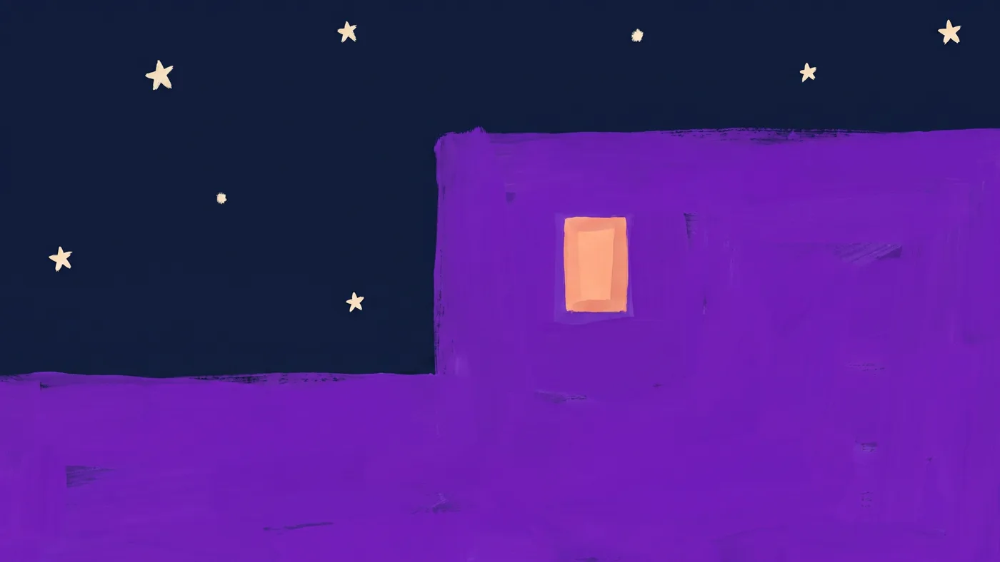

8 h 40 · Avant le comité
Deux minutes pour poser sa voix
Camille présente devant la direction à 9 h. Dans le couloir, elle lance la séance « Avant une présentation » : deux minutes pour ralentir le souffle et arriver posée.
Quieto pour les entreprises
Un coup de stress avant une réunion, une nuit qui tourne en boucle : Quieto aide chacun à souffler. Une façon simple de prendre soin de toute votre équipe.

Au bureau, puis à la maison
Les réunions qui s'enchaînent, le mail de trop, la pression qui ne redescend pas. Quieto aide chacun à souffler entre deux urgences.
Les alertes, les guerres, les crises : une actualité qui angoisse et empêche de dormir. Quieto a des séances pour décrocher du flux, comme « Quand le monde brûle » ou « Débrancher quand tout crie ».
On accompagne vos salariés dans leur vie pro comme dans leur vie perso. Plus apaisés le soir, ils arrivent plus disponibles le matin.
Voici comment Quieto accompagne Camille, chargée de projet, d'un bout à l'autre d'une journée chargée.
8 h 40 · Avant le comité
Camille présente devant la direction à 9 h. Dans le couloir, elle lance la séance « Avant une présentation » : deux minutes pour ralentir le souffle et arriver posée.
14 h · Le mail de trop
Un dossier urgent tombe, le cœur s'accélère. Deux minutes avec « Coup de stress au boulot », et elle reprend la main au lieu de réagir à chaud.

19 h · Ce qui tourne en boucle
Rentrée chez elle, Camille écrit à Louane ce qui la travaille. Louane l'écoute, l'aide à démêler, et lui propose une respiration. Pas de rendez-vous, pas de jugement, à l'heure qui lui convient.
23 h · Le sommeil qui ne vient pas
Au lit, la journée repasse en boucle. Le « Rituel pré-sommeil » l'aide à relâcher le corps et à laisser la journée derrière elle.

La semaine · Installer l'habitude
À partir de ce qu'elle vit, Quieto lui compose un programme de 7 jours : quelques minutes par jour pour que le calme devienne un réflexe, pas un sauvetage.
Camille a toujours autant de travail. Mais elle a maintenant de quoi souffler à chaque moment de la journée, et elle arrive au bureau en meilleure forme.
Essayez maintenant
Suivez le cercle : inspirez quand il grandit, expirez quand il redescend. C'est ce que Quieto offre à chacun, au moment où ça compte.
Prêt ?
Imaginez ces trente secondes avant chaque réunion difficile : c'est ce que Quieto offre à chacun de vos salariés.
Demander une démoLa santé mentale au travail n'a jamais autant pesé, sur les personnes comme sur les entreprises.
salarié se dit en détresse psychologique, un niveau record depuis 2020.
Empreinte Humaine / OpinionWay, juin 2026des arrêts de plus d'un mois sont liés à des troubles psychologiques.
Malakoff Humanis, 2026de coût caché de l'absentéisme, en moyenne, par salarié et par an.
Ayming, 2026des salariés souffrent de troubles du sommeil.
Ifop / Moka.Care / BCG, mars 2026Quieto ne remplace pas vos actions de prévention : il les complète, avec un soutien disponible pour chacun, à toute heure.
Pourquoi Quieto
Tout est en français, avec des séances qui parlent du quotidien réel : les transports bondés, l'appel difficile, l'actualité qui angoisse, le réveil en panique.
Parce que ce qu'on y confie reste personnel, chacun l'utilise vraiment, et pas seulement le jour de la présentation. C'est ce qui fait que ça marche.
Louane répond de jour comme de nuit, sans rendez-vous. En cas de détresse, elle oriente vers le 3114 et les secours.
De 1 à 14 minutes : de quoi souffler entre deux réunions, dans le métro ou avant de dormir, sans bouleverser l'agenda.
Pas de fichier de salariés à envoyer, pas d'outil à installer : un code, transmis à l'équipe, et c'est tout.
Au mois, vous arrêtez quand vous voulez depuis votre espace. À l'année, deux mois sont offerts.
Offrez à toute l'équipe un soutien du quotidien, du stress passager aux nuits difficiles. Un forfait, un code, et chacun y a accès.
Calculer mon tarifProposez Quieto à tous les salariés dans le cadre de vos activités sociales et culturelles, par abonnement ou par virement.
Nous écrireIntégrez Quieto à votre offre de prévention pour vos adhérents ou vos clients entreprises.
Construire un partenariatTarifs
Premium complet pour chaque personne couverte. Paiement en ligne par prélèvement SEPA ou par carte, factures automatiques.
À partir de 44,88 € HT par salarié et par an
Un prix au nombre exact de personnes, qui baisse quand l'équipe grandit : de 56,04 € pour 10 personnes à 44,88 € à partir de 800. Au mois ou à l'année.
Écrivez-nous : nous libérons sa place pour quelqu'un d'autre. Il garde son compte et peut continuer avec la version gratuite ou son propre abonnement.
Écrivez-nous : nous ajoutons des places à votre abonnement, et le même code continue de fonctionner.
L'application le prévient au moment d'activer son accès, pour qu'il résilie son abonnement personnel et ne paie pas deux fois.
Oui, le CSE peut souscrire exactement de la même façon, ou nous écrire pour un paiement par virement.
Rien d'individuel. Ni les noms des personnes qui activent leur accès, ni leur utilisation, ni leurs échanges avec Louane.
Demander une démo
Une présentation de 20 minutes, un devis sur mesure, ou simplement une question : nous vous répondons en moins de 24 heures.